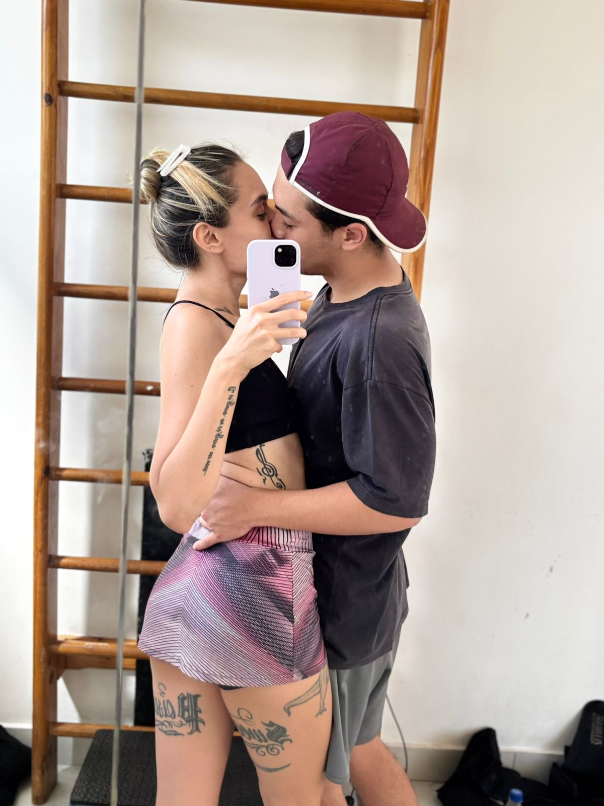
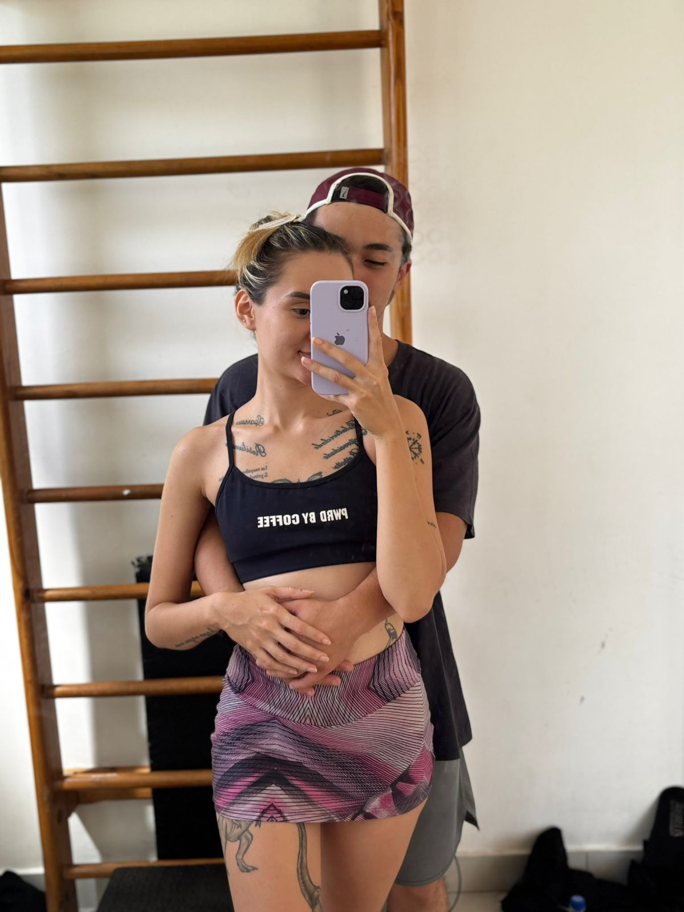
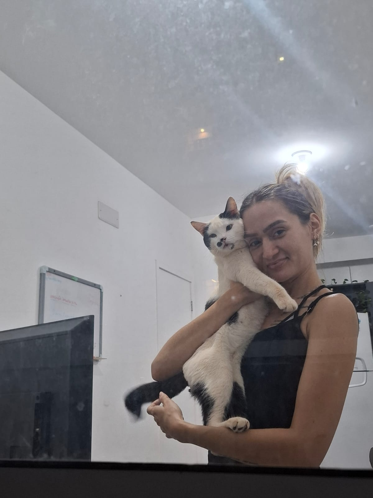
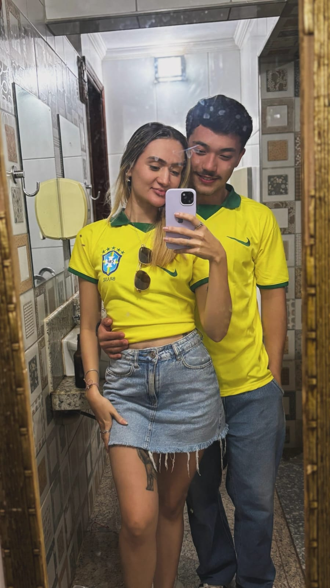

Nossa história
No começo eu já tinha uma certeza....
Depois veio o dia em que eu percebi que você era mais do que apenas alguém especial
E sem eu perceber, você se tornou parte da minha rotina, dos meus planos e do meu coração.
para Lainara, meu amor
No começo eu já tinha uma certeza....
Depois veio o dia em que eu percebi que você era mais do que apenas alguém especial
E sem eu perceber, você se tornou parte da minha rotina, dos meus planos e do meu coração.




Amor, eu não sou muito bom com palavras bonitas, mas vou tentar. Desde que você entrou na minha vida, as coisas meio que ficaram no lugar — não sei explicar bem, mas é isso.
Você me faz rir até nos dias chatos, me escuta quando eu preciso e está ali, simplesmente. Isso vale mais do que qualquer coisa pra mim.
E por isso eu quero dar o próximo passo com você. Continue lendo até o final, porque eu tenho uma pergunta pra fazer.
Depois de tudo que a gente já viveu, e pensando em tudo que eu ainda quero viver ao seu lado...
Te amo, amor. E essa é só a primeira página da nossa história.